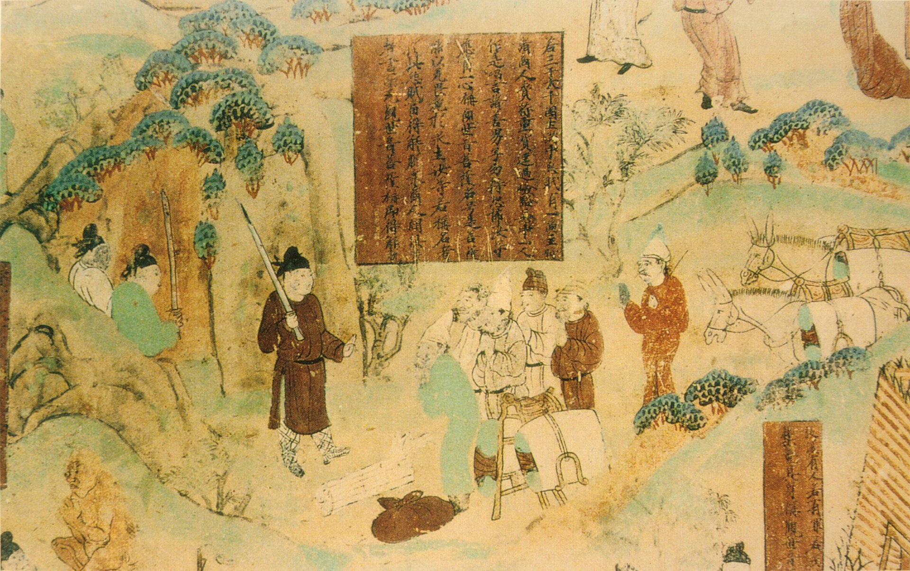

第 28 章
博物馆的转身
从空中俯瞰，柏孜克里克千佛洞所在的那条沟谷，在卫星地图上只是一道浅浅的褐色褶皱。火焰山的南麓被流水切割出这条狭长的峡谷，谷底有溪，两岸的崖壁上密密麻麻地排列着洞窟。那些洞口是矩形的，有些还残留着土坯砌筑的门楣，有些已经完全崩坍，露出内部空荡荡的窟室——那些在空了的佛龛前继续烧香的人，或许正从谷底的小路上走过。
从高处看，它们像一排排被掏空了的眼眶。如果拉近，就能看见崖壁上的切痕。那些切痕不是自然形成的。它们是锯子和凿子留下的——沿着壁画的轮廓线，切入岩壁的泥层和草泥层，深度大约五到十厘米，形成一个规整的矩形凹槽。凹槽内部的壁画已经被取走了，露出下面粗糙的土坯层。
凹槽边缘的断面很整齐，可以清楚地看到泥皮的分层结构：最外层是白灰面，然后是细泥层，再往下是粗泥层，最后是岩体本身。这些层次是吐鲁番地区石窟壁画的标准工艺，一千多年前的工匠们就是这样一层一层地把泥抹上去，等它干透，再在上面起稿、勾线、敷色。现在这些层次裸露在外，像一页被撕掉了封面的书。切痕分布在柏孜克里克的多个洞窟中。
最密集的区域是第20窟——也就是后来被编号为第9号洞窟的那一个——以及它两侧的第19窟和第21窟。这些洞窟的壁面被切割得尤其彻底。主室正壁的整面《誓愿图》被揭取，侧壁的说法图被分割成若干矩形块，连券顶下方的供养人行列也被一块一块地锯了下来。
切割者显然有明确的操作逻辑：他们选择画面最完整、色彩保存最好的部分，沿着人物的轮廓线或画面的自然分界线下锯，尽量避免破坏主体形象。这说明他们不是盗凿者——至少不是那种用锤子直接敲下佛头的人。他们知道自己在做什么。
他们是日本人大谷探险队的成员。1908年，大谷光瑞派遣的第二次西域探险队到达吐鲁番。
这支队伍的构成和斯坦因、伯希和的考察队有所不同。领队橘瑞超当时只有十八岁，是大谷光瑞的门徒，出家僧人。他的助手野村荣三郎比他年长，负责具体的发掘和记录工作。
两人都不是考古学家出身，也没有受过系统的田野发掘训练。但他们带着明确的任务：寻找佛教东传的实物证据。大谷光瑞本人是净土真宗西本愿寺的第二十二代法主。
这个身份意味着他不仅仅是一位宗教领袖，同时也是一位拥有巨大社会资源和文化抱负的人物。西本愿寺在明治时期的日本是一个庞大的宗教—社会综合体，拥有自己的学校、出版机构和海外传教组织。大谷光瑞在伦敦留学期间接触到了欧洲的东方学传统，尤其对斯坦因在中亚的考古发现产生了浓厚兴趣。他相信，佛教从印度经中亚传入中国的路径上，一定留下了大量的遗址和遗物。如果能够找到这些实物，就可以为日本佛教的源流提供物质性的证明——不是通过经卷的传承谱系，而是通过考古学的实物链。
这个想法本身并不新鲜。斯坦因和伯希和也是沿着类似的思路在行动。但大谷探险队有一点和他们不同：这支队伍的资金来自西本愿寺的寺产，队员是僧侣和信徒，他们的考察活动被赋予了宗教使命的色彩。橘瑞超在出发前写给大谷光瑞的信中，把这次探险称为“踏查佛迹”——不是“考古发掘”，不是“科学考察”，而是“踏查”。这个词在日本佛教的语境中，指的是僧人为寻访先贤遗迹而进行的旅行。
换句话说，他们把自己定位为朝圣者，而非研究者。朝圣者会带走圣物。这是所有宗教共有的逻辑。
橘瑞超和野村荣三郎在吐鲁番盆地工作了将近四个月。他们对柏孜克里克千佛洞的发掘集中在四十七个洞窟上。发掘的方式是：先清理洞窟内的积沙和坍塌物，然后在壁面前仔细观察，寻找画面保存较好的区域，用锯子和凿子将它们切割下来。
切割之前，他们会拍摄照片——大谷探险队留下了大量柏孜克里克洞窟的影像资料，这些照片现在分散在日本的多家机构中，成为研究这些洞窟原貌的重要依据。切割之后，他们把壁画块编号、装箱，和佛头像、佛教绢画、写经残卷以及其他出土物一起运走。
《金刚经》残碑的发现尤其让橘瑞超兴奋。那是一块刻有汉文《金刚经》的石碑碎片，字迹清晰，书法工整。在佛教东传的叙事框架中，汉文佛经在吐鲁番地区的出现，意味着中原佛教对西域的反向传播——这是一个复杂的历史过程，不能用简单的“西来东渐”来概括。但橘瑞超当时看到的不是历史过程的复杂性。
他看到的是证据：佛教确实经过了这里，留下了痕迹。八块大型壁画和数量更多的壁画残块就这样被装进了木箱。它们和佛头像、绢画、写经一起，构成了大谷探险队第二次西域之行的收获。这些木箱先被运到乌鲁木齐，然后经西伯利亚铁路运回日本。
木箱回到日本之后，事情变得复杂起来。大谷光瑞在1914年辞去了西本愿寺法主的职位。辞职的原因涉及寺院内部的权力斗争和财务问题，与探险本身无关，但后果直接波及了收集品的去向。大谷探险队的三次西域考察带回的大量文物，原本是作为西本愿寺的寺产保存的。大谷辞职后，这些收集品失去了稳定的归属主体。
它们被分散到不同的机构和个人手中：一部分留在了西本愿寺，一部分转移到了大谷光瑞在神户的私人住宅“二乐庄”，一部分被赠送或出售给了其他收藏者，还有一部分后来进入了东京国立博物馆、京都国立博物馆和龙谷大学。分散的过程持续了多年。在这个过程中，原境信息开始丢失。
木箱上的编号标签脱落了，照片和实物之间的对应关系模糊了，发掘记录和收集品之间的匹配出现了断裂。今天，大谷探险队的收集品分散在日本、韩国、中国和欧洲的多家机构中，学者们仍然在努力重建这些碎片之间的关联。
有些壁画块在转运中被切割成更小的块，以适应新的装裱和展示条件。有些佛头像被配上了不属于它们的躯干。有些写经残卷被裱褙时贴错了顺序。
这不是一个关于“破坏”的简单故事。切割壁画的行为本身就是一种破坏——这是事实。但更值得留意的是破坏之后发生的事情：当这些碎片进入日本的收藏体系之后，它们被重新分类、重新命名、重新装裱、重新解释。
它们不再是柏孜克里克千佛洞第几窟正壁左侧的某一部分。它们变成了“大谷收集品”中的一件“西域佛教壁画”，被归入“中亚美术”的范畴，在展览中和来自敦煌、克孜尔、和田的文物并列。它们获得了一个新的身份。这个新身份是学术研究的基础，也是市场流通的通货，也是博物馆展示的单元。
但它和柏孜克里克那个具体的洞窟、那面具体的墙壁、那个具体的社区之间的关系，被切断了——就像壁画本身被从岩壁上切下来一样。
这不是大谷探险队独有的问题。斯坦因、伯希和、勒柯克、科兹洛夫——所有在二十世纪初从中国西北带走文物的人，他们的收集品都经历了类似的再语境化过程。但大谷探险队的案例有其特殊性：收集品的分散不是发生在不同国家的博物馆之间，而是发生在同一个国家的不同机构之间。这使得原境信息的丢失呈现出一种更加细微的形态——它不是被国境线切断的，而是被机构之间的边界、个人之间的交接、时间之中的遗忘所消解的。
柏孜克里克千佛洞的崖壁上，那些矩形的切痕一直留在那里。1950年代初期，西北文化局的新疆文物调查工作组，成员包括阎文儒和常书鸿等人，对柏孜克里克千佛洞进行了复查。他们在洞窟里看到了那些切痕，在笔记中记录了壁面被揭取的情况，拍摄了照片。这些照片后来发表在《文物》杂志上，成为研究柏孜克里克洞窟原貌的重要档案。
1982年，柏孜克里克千佛洞被列为全国重点文物保护单位。2010年代初，敦煌研究院和兰州大学文物保护研究中心等单位对洞窟进行了两期抢险加固工程。
崖壁上的切痕被保留了下来，没有用新的泥皮覆盖。它们就那样留在了那里，像一种无声的陈述。
现在，让我们把目光从柏孜克里克的崖壁移开，转向二十一世纪初的欧美博物馆。这两个场景之间的地理距离是数千公里，时间距离是将近一个世纪。但它们之间存在着一种直接的联系：那些在二十世纪初被切下来、装箱运走的壁画块，如今就陈列在这些博物馆的展厅里。而崖壁上的切痕，构成了对它们的一种持续的质询。
这个质询不是以语言的形式发出的。它不需要起诉书、外交照会或国际公约的条文。它只是一种物理性的存在：那面墙上缺了一块，缺了的那一块就在你的展厅里。这两者之间的对应关系是无可辩驳的。它不需要任何理论来证明，只需要一双眼睛来看。
二十一世纪初的博物馆不得不面对这双眼睛。转折的迹象出现在不同的地方，以不同的方式，在不同的时间点上。
它们不是同步的，也不是协调的。有些是主动的政策调整，有些是被动的回应，有些只是在措辞上的微妙变化。
但它们共同构成了一个可辨认的趋势：博物馆开始意识到，自己不能仅仅以“普世博物馆”的理念来回应关于流散文物的质询了。
“普世博物馆”这个说法本身就是一个值得注意的措辞。它是在2002年由十八家欧美主要博物馆联合签署的一份宣言中正式提出的。这份宣言的核心论点是：博物馆收藏的文物属于全人类，不应被民族国家的边界所限制；博物馆作为普世价值的守护者，有权保有这些文物，并为其提供最好的保存条件和最广泛的公众展示。这份宣言的签署方包括大英博物馆、卢浮宫、大都会艺术博物馆、柏林国家博物馆等——正是那些收藏了最多流散中国文物的机构。
宣言发布的时机不是偶然的。2002年，国际上关于文物返还的讨论正在升温。1998年，四十四个国家在华盛顿签署了关于纳粹劫掠艺术品返还的原则宣言。2001年，联合国教科文组织通过了《保护水下文化遗产公约》。
同年，希腊加大了对大英博物馆归还帕特农神庙雕塑的施压。在这个背景下，“普世博物馆”宣言可以被理解为一种防御性的姿态——一种在追索浪潮到来之前预先构建的合法性论述。
但这个论述有一个内在的脆弱之处。它假设博物馆的普世性可以超越文物的原境性。它说：这些文物属于全人类，所以它们留在伦敦、纽约、巴黎和柏林是合理的。但它没有回答一个更具体的问题：为什么“全人类”的代表权，恰好落在这几家位于西方大都市的博物馆手中？为什么不是开罗、新德里、北京的博物馆？如果文物真的属于全人类，那么它们被保存和展示的地点，是否也应该体现这种普世性——而不只是集中在少数几个城市？
这些问题在宣言发布之后的几年里，逐渐从学术讨论进入了公共领域。2003年，大英博物馆在举办“中东古代文明”展览时，在展签的措辞上做了一处微妙但重要的调整。
过去，一件亚述浮雕的展签通常会这样写：标题是“猎狮图”，年代是“公元前645年”，材质是“石灰岩”，然后是艺术史风格的描述——“亚述帝国晚期典型的叙事浮雕风格，展现了王室狩猎场景的戏剧性张力”。但在2003年的这个展览中，展签的最后多了一行字：“本件于十九世纪中期由英国考古学家奥斯汀·亨利·莱亚德在尼姆鲁德发掘，后运抵伦敦。”
这行字很简短。它没有提到“掠夺”或“殖民”这样的词。它只是陈述了一个事实：这件东西是从哪里来的，通过什么人，在什么时间，到达了这里。但这个事实本身，就足以打破展柜玻璃所营造的那种无时间性的幻觉。
在传统的博物馆展示逻辑中，文物被呈现为一种纯粹的审美对象或历史证据，它的“来源历史”——也就是它是如何从原境到达博物馆的——通常被省略了。观众看到的是一件完美的浮雕，孤独地立在展墙上，被灯光照亮，被标签解释。他们看不到尼姆鲁德的那座宫殿遗址，看不到莱亚德指挥工人搬运浮雕的场景，看不到装箱、运输、海关、拍卖、捐赠这一连串的中间环节。
而现在，展签上多出来的那一行字，像一条细线，把展厅和那座遥远的遗址连接了起来。这条线的一端是伦敦的玻璃展柜，另一端是伊拉克北部的荒漠。观众如果愿意，可以沿着这条线往回走——从博物馆走回考古发掘现场，走回殖民时代的历史，走回文物离开原境的那个时刻。
这种展签措辞的变化，在二十一世纪的头十年里，逐渐出现在越来越多的博物馆中。它不是一项统一的政策，没有哪个博物馆协会发布过关于展签来源信息的指导方针。它更像是一种自发的、分散的、时断时续的实践。
有些策展人在撰写展签时，会主动加入来源信息。有些博物馆在展览图录中增加了“流传史”的章节。有些机构开始对馆藏进行系统的来源研究，追溯每一件文物的入藏路径。
来源研究的制度化是一个重要的信号。在过去，博物馆对文物的来源信息通常只追溯到最近一次交易——从某位收藏家手中购得，或者由某位捐赠人遗赠。至于这位收藏家是从哪里得到的，捐赠人的父辈是如何获得的，往往被记录为“来源不详”或干脆留白。
这种做法在很长一段时间里被视为正常的——博物馆的职责是保存和展示，不是做侦探。但到了二十一世纪初，这种“正常”开始受到质疑。质疑来自多个方向：原属地国家的追索要求、国际公约的约束力、媒体的调查报道、学术界的伦理讨论，以及公众对博物馆透明度的期待。
大都会艺术博物馆在2006年成立了一个专门的来源研究部门。大英博物馆在2007年开始对馆藏中可能涉及纳粹劫掠的艺术品进行系统排查。卢浮宫在2008年发布了关于馆藏来源透明化的政策声明。这些举措的时间点，与文物追索议题在国际公共领域的升温是同步的。它们可以被视为博物馆对追索压力的回应——一种试图通过提高透明度来缓解合法性危机的策略。
但策略并不等于虚伪。来源研究本身是一项严肃的学术工作。它需要查阅大量的档案、信函、拍卖记录、海关文件和老照片，需要比对不同来源的信息，需要处理大量缺失和矛盾的证据。
这项工作一旦启动，就会产生自己的逻辑。研究者会发现一些过去被忽略或故意掩盖的事实：某件藏品的入藏时间，恰好与某个考古遗址被盗掘的时间吻合。某位捐赠人的旅行日记中，记录了他在某座石窟寺附近停留的日期。某个古董商的账本中，出现了与馆藏编号对应的物品描述。这些事实一旦被揭示出来，就不能再被“忽略”了。
它们进入了公共记录，成为可以被引用、被讨论、被追索的依据。来源研究因此具有一种不可逆的特性：它打开的档案，不能重新封上。它建立的对应关系，不能重新抹去。它提供的透明度，为追索方提供了新的论据，而这些论据反过来又对博物馆构成了更大的压力。这就是“转身”的真正含义。它不是一次性的政策转向，不是从“拒绝归还”到“同意归还”的简单翻转。
它是一种制度性的自我改造——博物馆开始接受，自己的收藏行为不是发生在真空中，而是发生在具体的历史条件下，涉及具体的人物、交易和权力关系。接受这一点，就意味着接受这些藏品的历史不是从它们进入博物馆的那一刻开始的，而是从更早的时候——从它们被制作出来的那个洞窟、那座寺院、那面墙壁开始的。这个转身的过程是缓慢的，不均匀的，充满了内部的矛盾和反复。同一家博物馆，可能在某个展览中采用了高度透明的展签措辞，在另一个展览中又回到了传统的匿名化叙事。
同一个策展人，可能在某件藏品的来源问题上坦率承认其争议性，在另一件藏品上却选择避而不谈。这不是虚伪。这是一个机构在调整自身的认知框架时，必然会出现的摇摆。2013年，纽约大都会艺术博物馆举办了一场关于中国佛教艺术的展览。展览的标题是“佛光——亚洲艺术中的佛教图像”。展厅的入口处，一尊来自响堂山石窟的北齐佛首被安置在一个独立的展柜中。展柜的灯光很柔和，佛首的面部表情沉静安详。展签上写着年代、材质和艺术风格的描述。但在展签的最后，多了一行字：“本件于二十世纪初经由卢芹斋购得，后转入本馆收藏。”
卢芹斋。这个名字出现在大都会的展签上，本身就是一个信号。在二十世纪中国文物流散的历史中，卢芹斋是一个无法绕过的人物。他从一个中国驻法使馆的翻译，变成了巴黎和纽约最重要的中国古董商，经手了大量从中国石窟寺和墓葬中流出的文物。他的名字与龙门、响堂山、天龙山的许多流失佛首直接相关。
过去，博物馆在展示这些文物时，通常只会提到“购自某私人收藏”或“某基金会捐赠”，不会提及卢芹斋的名字。现在，这个名字出现在了展签上。这意味着什么？它意味着博物馆承认了这件文物进入收藏的具体路径。这条路径不是中性的。它涉及一个在二十世纪上半叶活跃于国际艺术品市场的古董商，而这个古董商的货源，与中国境内石窟寺的盗凿活动直接相关。展签上没有说“盗凿”——它只是说“经由卢芹斋购得”。
但对于了解这段历史的观众来说，这行字已经足够。它像一个小小的裂缝，让另一种叙事渗入了博物馆精心构建的艺术史叙事之中。在同一场展览的开幕式上，发生了一个值得注意的场景。
大都会的馆长和来自中国国家文物局的一位官员并肩站在展厅中央，面对记者的镜头。馆长穿着深色西装，双手交握在身前，身体微微前倾，脸上带着礼貌的微笑。中国官员站在他的右侧，身体挺直，双手垂在身体两侧，表情平静。两人之间的距离大约四十厘米——这是社交礼仪中标准的距离，不远不近。
但在那几秒钟的闪光灯照射下，这个距离似乎承载了比礼仪更多的东西。它既不是亲密，也不是疏远。它是一种精确的、经过计算的位置安排：两个机构、两个国家、两种叙事，站在同一间展厅里，面对同一批文物，但他们的身体语言透露出的，是一种尚未完全消解的张力。这张照片后来被多家媒体刊登。有些报道把它解读为“合作”的象征，有些则看到了“对峙”的暗流。
但也许最准确的描述是：他们站在了一起，但还没有学会如何自然地站在一起。这不是一个关于“虚伪”的故事。大都会的展览确实代表了某种进步：展签上的来源信息、与中国机构的合作策展、对文物原境的学术关注——这些都是真实发生的改变。但进步不等于解决。
那四十厘米的距离，就是转身的限度。转身的限度体现在多个层面。首先是法律层面。2002年“普世博物馆”宣言签署之后，大多数欧美博物馆仍然坚持不主动归还争议文物的立场。它们的理由是：博物馆的董事会章程禁止出售或赠送馆藏；文物的合法所有权已经通过购买或捐赠获得；原属地国家的追索缺乏足够的法律依据。这些理由在法律上是成立的——至少在没有溯及力的现行国际公约框架下是成立的。
但它们回避了一个更根本的问题：法律上的“合法”，是否等于道德上的“正当”？一件文物在二十世纪初通过战争、殖民或不平等交易离开原境，当时的法律可能并不禁止这种行为。但今天，当我们回顾这段历史时，是否可以仅仅因为“当时合法”就心安理得地保有这些文物？
其次是实践层面。来源研究的推进面临着巨大的资源约束。追溯一件文物的完整流传史，可能需要查阅散落在十几个国家的档案，可能需要数年的时间和数十万美元的经费。
对于收藏了数百万件文物的综合性博物馆来说，对所有藏品进行系统的来源研究几乎是不可能的。这意味着，来源研究只能是有选择性的——优先处理那些争议最大、追索压力最强的藏品。而那些“低风险”的藏品，它们的来源信息可能永远停留在“不详”的状态。第三是叙事层面。即使博物馆在展签上加入了来源信息，这些信息通常也是高度简化的。
一行“二十世纪初经由卢芹斋购得”，无法传达出文物流散过程的全部复杂性。它不会提到龙门石窟的哪一面浮雕被凿了下来，不会提到凿下浮雕的当地村民的名字和动机，不会提到卢芹斋在巴黎和纽约之间建立的复杂的销售网络，不会提到购买这件文物的美国收藏家的审美趣味和社会地位。这些信息被压缩成一行字，被安置在展签的最末端，被大多数观众的目光一扫而过。它提供了一种透明度的幻觉，却没有真正改变观众理解这件文物的方式。
但这些限度并不意味着转身是无意义的。恰恰相反，正是因为存在这些限度，转身才是一个真实的过程——而不是一个虚假的姿态。
一个真实的转身，从来不是一蹴而就的。它需要时间，需要反复，需要在不同力量之间的艰难平衡。2015年，柏林亚洲艺术博物馆举办了一场关于丝绸之路佛教壁画的展览。展览的核心展品是来自柏孜克里克千佛洞的壁画残块——正是勒柯克在1905年切割带回柏林的那些。这场展览的策展方式与此前有明显的不同。展厅中设置了一个专门的区域，用照片和文字展示了这些壁画在原洞窟中的位置。
照片是近年拍摄的，可以看到崖壁上那些矩形的切痕。文字说明详细记录了壁画被切割、运输和入藏的过程，包括勒柯克本人的日记摘录。在展览图录中，有一章的标题是“分离的历史”，专门讨论了这些壁画离开原境的过程及其后果。展览期间，柏林亚洲艺术博物馆邀请了来自新疆的文物保护专家参与学术研讨。这不是一次归还谈判，也不是一次联合展览——它只是一次学术交流。
但在研讨会结束后的参观环节，新疆专家站在那些壁画残块前，沉默了很久。后来有人问他，看到这些壁画在柏林的展厅里，是什么感觉。他说：“它们在这里保存得很好。但我们的崖壁上，还留着它们的形状。”

这句话不是控诉。它也不是认可。它只是陈述了一个事实：保存得好，和应该在哪里，是两个不同的问题。博物馆可以证明自己有能力保存这些文物，可以为它们提供恒温恒湿的环境、专业的修复技术和面向全球观众的展示平台。
但这些都不能回答那个更根本的问题：它们是否应该被还回去？或者，更准确地说，在什么样的条件下，它们可以以什么样的方式，与原境重新建立联系？这个问题在二十一世纪的头二十年里，始终没有得到明确的回答。博物馆的转身，为回答这个问题创造了一些制度条件——来源研究的推进、展签措辞的改变、与原属地机构的合作、对争议历史的公开讨论。
但这些条件本身，还不足以构成一个答案。答案需要更多的力量来推动：国际公约的修订、双边协议的签署、司法判例的积累、公众舆论的压力、原属地社区的持续发声。这些力量中的一部分，已经在发挥作用。但它们的作用是缓慢的，不均匀的，充满了不确定性的。
一家博物馆可能在某一年推出一场高度反思性的展览，在下一年又因为董事会或捐赠人的压力而退缩。一个国家的追索行动可能在某一件文物上取得成功，在另一件文物上却遭遇搁浅。转身是一个过程，不是一个终点。这个过程最终会走向哪里，没有人能够预测。
但可以确定的是，博物馆已经不能再假装自己只是一个中性的保存和展示机构了。它被卷入了关于历史正义、文化权利和全球公平的更广泛的讨论之中。它的展柜、展签、图录和新闻发布会，都成了这场讨论的场域。它的每一次转身——无论多么微小、多么缓慢、多么不彻底——都在为这场讨论提供新的材料和新的可能性。闭馆时间到了。柏林亚洲艺术博物馆的展厅里，灯光逐渐暗下来。
最后一批观众离开了，大门在他们身后合拢。清洁工推着清洁车进入展厅，开始擦拭展柜的玻璃。她的动作是机械的，匀速的，带着长年工作积累下来的节奏感。抹布在玻璃表面画出一个又一个弧形，擦掉了白天观众留下的指纹和呼吸凝结的水汽。
展柜里，来自柏孜克里克千佛洞的壁画残块静静地嵌在墙面上。佛陀的面容在昏暗的应急灯光中隐约可辨，衣纹的线条流畅地垂落下来，色彩在千年之后仍然保持着某种温润的质感。展柜下方的标签上，用德文和英文写着壁画的名称、年代、材质，以及最后一行字：“1905年由德国探险队自柏孜克里克千佛洞第20窟揭取，后入藏柏林民族学博物馆，现展出于柏林亚洲艺术博物馆。”
清洁工擦过这行字的时候，并没有停下来阅读。她只是继续移动着抹布，从一个展柜走向下一个展柜。展厅里很安静，只有清洁车的轮子在地板上滚动的声音，和恒温恒湿系统发出的微弱的嗡鸣声。这个声音是持续的，均匀的，像一种背景音，从早到晚，从开馆到闭馆，从一年到另一年。它维持着这个空间里的温度和湿度，维持着这些来自一千多年前、数千公里外的壁画残块的物理存在。嗡鸣声不会回答任何问题。它只是持续着。而崖壁上的那些切痕，在吐鲁番干燥的夜风中，也在持续着。